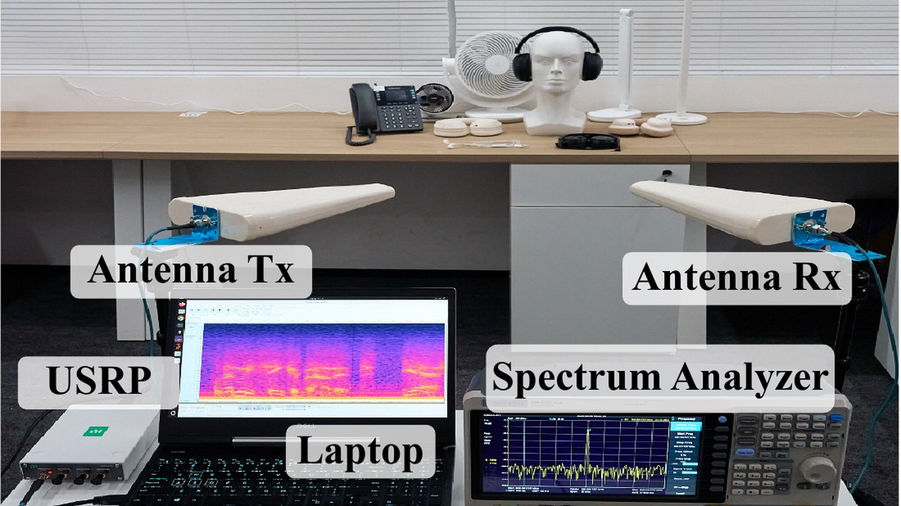

Good morning. You know the scene: you're on a train or in a coffee shop, headphones on, volume up, certain that what you're hearing is between you and your earbuds. The encryption protecting your Bluetooth link certainly takes the same view, and it has never been defeated here. Researchers from the Hong Kong University of Science and Technology (Guangzhou) and Hong Kong Polytechnic University have now shown that it doesn't need to be. Their attack, InjectEave, recovers intelligible audio from ordinary wired and wireless headphones from up to 30 meters away — through a 30-centimeter concrete wall, in hotel rooms and meeting rooms — without touching the device, without malware, and without breaking or even caring about the encryption at all. The secret doesn't come out of the radio you think it does. It comes out of your hardware's own wiring, which an attacker simply persuades to become a transmitter.
The paper, "Injected and Leaked: Actively Inducing Side-Channel Leakage Using Electromagnetic Injection and Hardware Nonlinearity", was accepted at USENIX Security '26, where it will be presented in Baltimore, and posted to arXiv on September 4, 2026. It is the first work to show that electromagnetic injection — beaming a carrier at a device — can actively induce and amplify a side-channel leak that passive eavesdropping could never reach. If the results hold up under peer scrutiny, they quietly redraw a line that most of security research had stopped questioning: the one between "digital" and "physical". In this story, the physical wins.
What: Researchers from HKUST (Guangzhou) and Hong Kong Polytechnic University demonstrated InjectEave, an electromagnetic-injection side-channel attack that recovers audio playing through wired and wireless headphones, landline phones, and smart-home devices trained on 11 commercial products. In a long-range experiment they recovered intelligible headphone audio from up to 30 m away, including through a 30 cm concrete wall in hotel- and meeting-room scenarios.
When: Paper posted to arXiv on September 4, 2026; publicly reported the week of September 7, 2026; accepted as peer-reviewed research at USENIX Security '26 (Baltimore), a top-tier security conference. Code and a project site with demo audio were released alongside.
Why it matters: InjectEave attacks the analog path inside hardware — amplifiers, ADCs, power converters — so encryption, masking, and software patches cannot stop it. Bluetooth and Wi-Fi can even be disabled and the device still leaks. On landlines the same rig can both eavesdrop and inject manipulated, AI-cloned speech into a live call, turning passive spying into active deception.
What the researchers actually did
Haoran Yan, Ziyu Shao and Shuhao Zhang (HKUST-Guangzhou), Qinhong Jiang (Hong Kong Polytechnic University) and Yan Long (HKUST-Guangzhou) built a rig out of commodity RF equipment and pointed it at a suite of everyday consumer gadgets. The parts list is almost boring: a USRP B210 software-defined radio transmitting a single-tone carrier, two antennas (one to transmit, one to receive), a Siglent spectrum analyzer for demodulation, and a laptop to run it. No exploits. No firmware. No physical access. Under test were 11 off-the-shelf devices across five categories — wired headphones, wireless headphones, a VoIP landline, smart fans and smart lamps — and in every category the rig recovered low-frequency secrets the devices were handling: audio, power consumption, and actuation-control signals.
The headline result is the audio. In baseline experiments the team recovered signals from wireless headphones at up to 6 meters depending on the model; a long-range experiment with amplified, better-quality receiving equipment recovered intelligible speech from 30 meters. Walls barely mattered — in hotel-room and meeting-room case studies they eavesdropped on a UGreen MAX2 headset from an adjacent room through a 30 cm concrete wall, then cleaned up the leak with an AI speech-enhancement model so recovered sentences were crisp. The recovered audio included spoken passwords and bank-card PINs — enough to make a demo where visitors are invited to listen to an eavesdropped clip and recover the password themselves (it is 4815162342 — a Lost reference, very on-theme).
Why passive eavesdropping usually loses
Side channels are old news. TEMPEST — the NSA program for snooping on emanations from computing equipment — dates to the 1970s, and for decades researchers have shown that keyboards, screens and speakers radiate enough electromagnetic energy to be intercepted. The physics problem, though, never went away: your device's electrical traces are unintentional antennas that radiate best at megahertz-to-gigahertz frequencies, while the secrets an eavesdropper wants are far lower. Human speech sits below 20 kHz; power and actuation signals below 200 Hz. Radiate a 4 kHz voice signal directly and it barely gets off the board. That "spectral mismatch" is what held passive attacks back. Headphone-focused attacks like magEar (magnetic side channel, effective under a meter) and Periscope (amplifier electromagnetic radiation) were generally limited to distances under 1.5 meters — impressive science, impractical surveillance.
InjectEave's move is to stop trying to read the weak, badly-radiated signal and instead give the secret a better ride. An adversary transmits an RF carrier tuned to a frequency the target device radiates efficiently. The carrier couples into the device's wiring — no contact required — and sweeps through nonlinear components that every consumer gadget contains. And it is that nonlinearity, not any software flaw, that turns the secret into a broadcast.
Injection, modulation, emission: how a radio makes your audio broadcast
The authors model the attack as a three-stage pipeline they call Injection–Modulation–Emission. Injection: the carrier signal couples into the device's unintentional antenna structures — the traces, cables and coils that connect its components. Modulation: a nonlinear component — an audio amplifier, an analog-to-digital converter, a power converter, a switching MOSFET — mixes the low-frequency secret (the audio waveform on the headphone driver) with the injected carrier. In simple electronic terms, nonlinear components multiply signals, and multiplying a secret signal by a carrier produces new signals at the sum and difference of their frequencies — sidebands around the carrier. That is the trick: the secret, which wanted to radiate poorly at its own low frequency, now rides on a carrier in the MHz–GHz band where the device's wiring is a much better antenna. Emission: the modulated signal leaks out of the device and the adversary demodulates it at the carrier frequency, recovering the original audio.
Two control experiments make the explanation airtight. A wideband sweep from 0 to 2 GHz under passive conditions shows no discernible leakage — the "closed" device really is closed. And when the researchers replaced the target's nonlinear components with linear resistive loads, the injection-induced leakage disappeared entirely. The nonlinearity is the load-bearing mechanism. That is also why the attack shrugs off encryption: the secret is being modulated onto the carrier inside the analog electronics, downstream of any encryption that protects the Bluetooth or Wi-Fi bitstream. The authors are explicit — InjectEave does not exploit wireless-communication vulnerabilities at all, so a device with its radios switched off leaks just the same.
Nothing in the list is exotic. Software-defined radios like the B210 cost a few thousand dollars and are standard lab equipment; the team notes each component can be swapped for higher-spec parts — a lower-phase-noise source suppresses the noise floor, a higher-power amplifier strengthens the injection, more directional antennas focus it — which is exactly how they stretched range from the 4–6 m baseline out to the headline 30 m. The rig is small enough that the paper photographs one version integrated into a suitcase.
"Injected EM carriers shift sensitive information into the efficient emission band — the secret piggybacks into a frequency range where the device's own wiring radiates well."
— InjectEave team, on the core mechanism (injecteave.github.io)The evidence: eleven commercial devices, five meters of physics
The attack was evaluated on consumer hardware, bought off the shelf, with no physical access and no hardware or software modification. The table below compiles the maximum distances at which each class of device leaked reliably — note that "leakage source" is the component doing the modulation, confirming that amplifiers, ADCs, switching MOSFETs and power converters are all equally guilty.
The real-world case studies are where the distances get scary. In one demo the attacker hides the rig behind bushes outdoors and eavesdrops on a victim from 6 meters. In hotel and meeting-room scenarios, the target is a UGreen MAX2 in the next room; the concrete wall attenuates the RF path by roughly 5.8 dB (glass and wood by only 1–2 dB), and the recovered sentences — including "Let's meet at the entrance of 221B Baker Street at 6pm tomorrow" and "My bank card PIN is 9-5-2-7, and the transfer amount is 3,500 US dollars" — are fully legible after the SGMSE denoiser runs. Rooms separated by ordinary construction materials are not private spaces anymore.
The scariest part: eavesdrop, synthesize, inject
InjectEave does not stop at listening. Because the injected carrier is bidirectional — the same coupling path that lets secrets leak out can carry injected signals in — the team demonstrated a closed loop they call Eavesdrop–Synthesize–Inject against a Flyingvoice VoIP landline. The attacker first recovers the call in real time. When trigger keywords appear — "quote," "confirmation," a contract number — a voice-cloning pipeline built on the open-source IndexTTS-2 synthesizes a forged reply in the speaker's own voice. Then the rig injects that synthetic audio straight into the phone's analog audio path, and the person on the far end of the call hears the clone, not the eavesdropper.
The paper's three worked examples are, in order, a ransomware-funder's dream, a fraudster's, and a spy's: a negotiator told to quote 5 million is heard agreeing to 8 million; a reply of "Yes, I agree" is overridden to "Actually, I disagree"; a driver told to turn right is redirected to turn left. Testing found the injected speech was nearly indistinguishable from the genuine speaker — an average deviation of just 0.071 on a standard speech-intelligibility metric, per the reporting around the release. What makes this different from the deepfake spam we already absorb: the tampering happens in the analog domain, after the speaker talks, before the listener hears. No text message, no prompt, no tell-tale lag the participants can check. It is the same mechanism that made the whole paper possible, aimed in reverse.
The quieter leaks: smart homes become beacons
The second-order findings are easy to miss under the 30-meter headline, but they may be the broadest claim in the paper. The same Injection–Modulation–Emission mechanism applies to any low-frequency analog secret hitting a nonlinear component — and IoT devices are full of them. A smart fan's motor-control pulses ride out of its switching MOSFET, so the attacker can infer the fan's speed and its operating modes. A smart lamp's power-converter couples its brightness state onto the carrier. Neither requires Wi-Fi access, camera footage, or a network compromise: the device leaks its state directly through the wall.
The team gives the two attacks menacing names that make their surveillance value explicit. "Context Inference": watching a fan drop into a slow "sleep mode" at night lets an adversary confirm a resident is asleep and home — occupancy and routine without any visual surveillance. "Behavioral Profiling": mapping lamp brightness to vendor presets (20% brightness = "Reading") turns a light bulb into a beacon that logs a person's activities all evening. Stack these on the headphone audio and the attack stops being a curiosity about earbuds and becomes a general blueprint: the smart home renders itself. The authors' FAQ is blunt about the scope — "any device built with nonlinear components is potentially exposed," and nonlinearity "is inevitable in contemporary computer systems."
The counter-reading: clever science, hard operation
Before anyone re-fortifies their house, the honest read of InjectEave is that it is impressive physics already equal parts real threat and stern caveats. First, the operational cost is genuinely high. An attacker needs transmitting and receiving RF hardware, must identify a carrier frequency that works against the specific target (different models leak at different bands), and benefits from owning another unit of the same model for offline profiling. The reported range varies enormously by device — an Apple wired earbud leaks at 1 meter, a UGreen headset at 6 — and the headline 30 meters required better-than-entry equipment plus AI denoising. Second, collectives of coverage make clear these results are examples of a phenomenon, not a proof that every product from those brands is broken.
There are also two structural limits that bound the threat. The injection is not undetectable at high power: when the team pushed a single-tone carrier hard (18 dBm, antenna adjacent to the headphone), artifacts were noticeable in the victim's own output audio — an attacker sacrificing stealth for range can be heard by the very person they're spying on. And the attack is inherently a targeted tool. Unlike a phishing blast or an exploit kit, it cannot be scaled to 10,000 victims at once; each target needs its own antenna alignment, its own tuned carrier, its own profiling. That makes InjectEave's realistic niche the one it was demonstrated in — hotel rooms, meeting rooms, boardrooms, and fixed residences of specifically interesting people — rather than mass surveillance. The savvier framing is that limits like these are exactly what better equipment and generative denoising are designed to erode, so the 30-meter demo should be read as a floor the authors reached with off-the-shelf parts, not a ceiling.
What to watch next
- Vendor and standards response. InjectEave sits in a regulatory blind spot: it is not a CVE-class software bug, and no consumer headphone on the market is shielded against it. Watch whether audio-IC makers start shipping output filtering, whether premium cans add metallic shielding, and whether emissions/EMC standards bodies even go near this.
- Post-review scrutiny. USENIX Security '26 presentation is one thing; independent replication is another. Watch for follow-up teams reproducing the 30 m result and stress-testing whether the wall penetration and PIN recovery hold under less cooperative conditions.
- Interface-fabrication in the wild. The Eavesdrop–Synthesize–Inject flow pairs mainstream voice cloning with a physical injection path. The combination of AI and side channels — the same pairing that dominated the last two TIMPS deep dives on agent incidents — is the pattern to watch for real-world abuse.
- Expansion to other analog secrets. The authors explicitly generalize to "analog sensor inputs." If the mechanism extends to keyboards, medical devices, or industrial instrumentation, the attack surface grows well beyond audio peripherals.
- Defense economics. The paper's recommended mitigations — twisted-pair wiring, shielding, filtering — raise the attacker's cost but "do not guarantee immunity," and a well-resourced adversary can overcome them with more power. Watch whether any vendor treats that as an acceptable risk posture rather than a compliance checkbox.
The TIMPS verdict
This is the strongest demonstration in years that hardware, not software, is where privacy dies. InjectEave takes a mechanism — hardware nonlinearity — that every electronics engineer knows exists and shows it can be weaponized to actively induce and amplify a leak that passive eavesdropping never could have achieved. The result is a genuinely new attack class: injection-induced EM side channels, with the audio, the smart-home leaks, and the landline manipulation all flowing from the same physical principle. The paper is unusually reproducible, too — commodity radios, open-sourced code, demo audio, and a photograph of the whole rig in a suitcase.
Its most important lesson is that encryption has become a moat around the wrong castle. Organizations firewalled, patched, and encrypted their way to confidence that a Bluetooth-streamed conversation is private. InjectEave shows the plaintext never had to cross the radio to be stolen — it leaks inside the device, before and after any crypto, through components no TLS version touches. Anyone who has treated "it's encrypted" as synonymous with "it's secure" should treat this paper as a correction of the record.
But the practical threat is narrower than the headlines. This is a targeted-surveillance weapon, not a mass one. It needs physical proximity, configured RF gear, per-model frequency profiling, and typically a same-model unit for calibration. The realistic victims are the occupants of specific hotel rooms, meeting rooms, and homes of interesting people — a real privacy hazard, but not a reason to panic about your commute. And the attack telegraphs at high power, so the phantom is not completely silent.
Watch the direction of travel. The pattern across the last several weeks of TIMPS coverage — agent swarms, AI-cloned voice, and now hardware side channels — is that AI is steadily lowering the skill floor of attacks that were once arcane. Voice cloning turned InjectEave's listening rig into a deception rig; speech enhancement made its 30-meter audio intelligible. The uncomfortable synthesis: a class of attack that needs careful science to discover now needs only software to operate. Standards bodies, chip designers and regulators all have homework. So do the rest of us — "encrypted" and "private" are about to need two very different threat models.
Facts in this piece were compiled from the InjectEave paper (arXiv:2609.04785, September 4, 2026), the project's public website and released code/artifacts, the USENIX Security '26 listing, and reporting from CyberInsider (September 7, 2026), CyberPress, GBHackers, CyberSecurityNews (September 8, 2026) and SecurityWeek's security roundup (September 11, 2026), within the September 2026 window. The 30 m audio recovery is the authors' own long-range experimental result, as reported in the paper and secondary coverage; per-device ranges vary substantially and are not claims of universal vulnerability across the brands listed. The 0.071 speech-intelligibility deviation figure describing the injected voice-clone audio was reported by CyberSecurityNews; the authors' own metric details should be confirmed against the paper. This is news analysis by an independent publication — not investment advice, not a security audit or endorsement of any product, and not a substitute for professional security assessment.
Sources
- arXiv — "Injected and Leaked: Actively Inducing Side-Channel Leakage Using Electromagnetic Injection and Hardware Nonlinearity" (Sep 4, 2026, primary source)
- InjectEave project website (demo videos, device table, mechanism explainers, FAQ)
- USENIX Security '26 — presentation listing (35th USENIX Security Symposium, Baltimore)
- Zenodo — open-sourced code and artifacts (including the SGMSE speech-enhancement model)
- CyberInsider — "New attack eavesdrops on headphone audio from 30 meters away" (Sep 7, 2026)
- CyberPress — "New InjectEave Attack Lets Attackers Eavesdrop on Headphone Audio From 30 Meters Away" (Sep 8, 2026)
- CyberSecurityNews — InjectEave attack coverage incl. IndexTTS-2 voice-clone results (Sep 8, 2026)
- GBHackers — "New InjectEave Attack Lets Hackers Eavesdrop on Headphone Audio From 30 Meters Away" (Sep 8, 2026)
- SecurityWeek — dispatch roundup covering the InjectEave release (Sep 11, 2026)
- ACM TOSN — magEar (prior magnetic side-channel headphone attack, for context)
One story a day,
explained properly.
New TIMPS deep dives land regularly — paired with the five-signal PostCard every morning. Free forever.